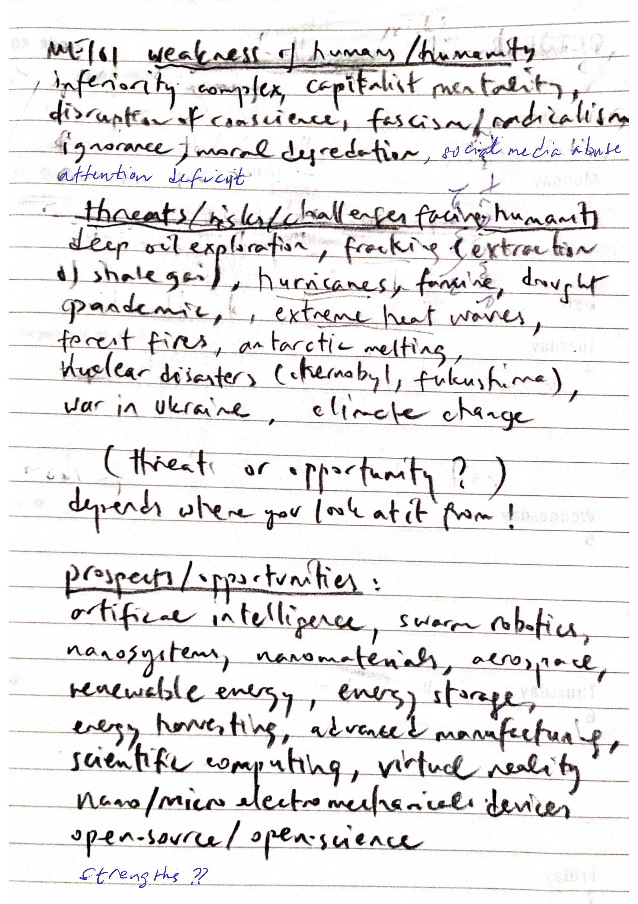
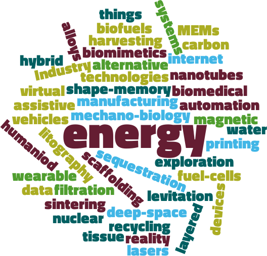

About the future, global issues, challenges on the one hand and opportunities, prospects on the other.

Use AI to describe the SWOT analysis. When, why, how is it useful? (Do not forget to provide the educational context while asking the question.)
Weakness-Imagined-Strength
Threat-Percieved-Opportunity
Focus: Future Prospects and Challenges
Swot Analysis of 2024 Fall
Swot Analysis of 2025 Fall
From last week’s activity: https://yulearn.yeditepe.edu.tr/mod/page/view.php?id=362498
Maddi veya manevi bir fayda temin etmek için, önceden planlanıp başlangıcı ve bitişi tespit edilen, kas veya beyin gücüyle veya hareket edebilen unsurlarla yapılan, yapan veya yapanların bilgi, beceri, kalıtımsal ve sosyal birikimlerini ortaya koydukları ve sonucu zaruri bir ihtiyacı karşılayacak kadar değerli olan eyleme iş denir.
2026, Celaleddin Vardarsuyu

Find your previous group members; you will be working closely with your teammates throughout the activity.
\begin{quote} environment to copy/paste the five sentences from each reference\cite{} keyUpload the PDF in the appropriate space provided in the assignment.
Ask AI: